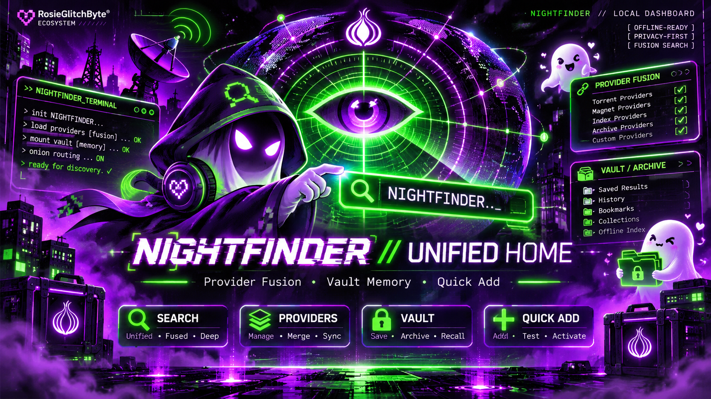

Quick Add
Manually capture research references with titles, attributed sources, and notes.
A neon-powered command hub for organizing manually collected public onion references. One workspace, clear sources, local vault memory, and a little ghost energy.
Visual showcase only. This page does not import, save, scan, browse Tor, or execute the NIGHTFINDER application. The original approved artwork is featured below. The functional NIGHTFINDER application is separate and has not yet been published here.
Approved GlitchByte Phantom Labs artwork, preserved exactly as uploaded. The image is illustrative; its printed terminal indicators are part of the art, not live application statuses.

An illustrative hub layout with three distinct entry points. These are visual examples, not operational buttons or links to private projects.
Features described here refer to the separately developed NIGHTFINDER application, not live interactions on this showcase page.
Manually capture research references with titles, attributed sources, and notes.
Bring approved local CSV and JSON research records into one organized view.
Separate useful references from the noise using keyword and source filters.
Take filtered CSV, JSON, or a full portable backup of your research records.
Optionally save the workspace to the browser profile and restore it later.
Follow external research directories and documentation links intentionally.
Sample interface below uses fictional, non-actionable placeholder content. No real onion address or private research appears.
NIGHTFINDER's privacy-focused design keeps manually imported research in the selected browser profile. Browser storage is not a permanent backup. Export responsibly, never publish sensitive records, and remember that external links use your browser's actual connection settings.